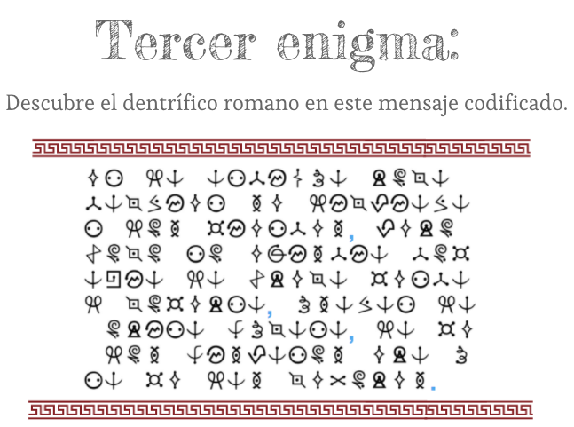
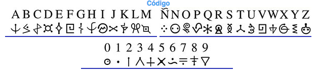

Gades
Hispania, la despensa de Roma.
La riqueza de Hispania en recursos naturales y minerales no pasó desapercibida para Roma.
Estos motivos favorecieron la explotación y el comercio de numerosos productos "hispanos" que llegaron a ser muy valorados en todo el imperio:
- La creación de una densa red de calzadas.
- La fundación de nuevas ciudades y puertos.
- El uso de una moneda común.
- Las nuevas técnicas aplicadas a la agricultura y minería.
La mayoría de esos productos fueron agrícolas como el vino, cereal y aceite, pero también se mandaban a Roma los famosos caballos lusitanos, que eran muy apreciados en las carreras de carros del circo romano, el pescado en salazón y la sal de la costa bética, el oro de las minas de Las Médulas (León), el mercurio de Almadén (Ciudad Real), la plata de Cartagena y el cobre de Riotinto (Huelva).
Entre todos ellos vamos a fijarnos en tres con una historia muy curiosa.
Aceite de oliva
En cuanto al aceite de oliva, su uso no es exclusivo de la moderna cocina. Los romanos ya lo usaban para casi todo: en la cocina, en los cosméticos, como medicamento y también para esto...
¿Sabes qué es? ¿Sabes cómo funcionaba?

Se llaman lucernas. Son unos recipientes, generalmente de terracota, donde se echaba aceite y se colocaba una mecha que se prendía para servir de iluminación en las antiguas casas romanas.
Otra curiosidad es que este aceite viajaba desde Hispania a Roma en ánforas que no volvían a ser reutilizadas...
¿Dónde acabaron esos 26 millones de ánforas?
Existen montes y colinas que son naturales, pero este no es el caso del monte Testaccio en Roma.
Este es un monte artificial de unos 35 m de altitud formado con los fragmentos de ánforas desechadas entre los siglos I-III d. C. Para que te hagas una idea de sus dimensiones, observa la siguiente imagen de principios del siglo XX.

Parece un enorme basurero pero no lo es ya que fueron cuidadosamente colocadas. Curioso, ¿verdad?
Garum
¿Os gustan las salsas? ¿Os decimos cómo se hacía el garum? Quizás después no os parezca tan apetecible como a los antiguos romanos.

milivanily. Salsa. (CC0)
En ciudades de la costa gaditana como Baelo Claudia se han encontrado almacenes dedicados al salazón de pescados como el atún o la caballa, y a la elaboración de unas de las más demandadas salsas del mundo romano: el garum.
Esta salsa se obtenía con las vísceras y partes desechadas de los atunes, la carne de otros pequeños peces, hierbas aromáticas, agua y sal. Se dejaba fermentar en piletas al sol durante un par de meses removiendo de vez en cuando y, finalmente, se mejoraba su sabor con vino o vinagre. Era un producto muy demandado y caro, por ello su consumo solo estaba al alcance de las clases más ricas.
Para la próxima hamburguesa... ¿Kétchup o garum?
Producto sorpresa
En cuanto al tercero, si queréis saber de qué estamos hablando, deberéis solucionar el enigma de esta sección.

Os parecerá increíble, pero es que la Historia está llena de estas curiosidades y anécdotas. Seguro que queréis descubrir otras.
Roma Viva
La actividad agrícola y ganadera del Imperio romano se organizaba en torno a las llamadas villas. En Palencia, se encontraron los restos de un magnífico ejemplo: la villa de La Olmeda.
¡Adelante!, la puerta está abierta.

Uno de los aspectos más destacados de esta villa son sus ricos mosaicos. Si sentís curiosidad y queréis ampliar la información podéis ver el enlace El mosaico del Oecus.
Manos a la obra
Estas son las tareas a realizar dentro de esta sección, antes de abordar un enigma más.
Un menú muy romano
El vídeo De Agri Cultura nos cuenta aspectos sobre la agricultura en la Hispania romana utilizando una supuesta carta como hilo narrativo, lo cual lo hace muy atractivo.
Ahora es vuestro turno.
La tarea a realizar consiste en redactar una carta a un imaginario amigo donde le contéis vuestro menú diario "romano", es decir, lo que coméis en cada una de las comidas del desayuno a la cena, a qué hora se realizan esas comidas y cualquier otro aspecto relacionado con la alimentación de un día cualquiera de vuestra "nueva" vida de romano.
Para ello os servirá de ayuda esta selección de enlaces sobre alimentación y vida cotidiana de la antigua Roma, aunque podéis utilizar cualquier otro enlace que os parezca interesante:
- La comida en la Roma antigua ¿Qué comían los antiguos romanos?
- ¿Quieres saber qué comían los romanos?
- La comida romana.
Si no tienes muy claro cómo debe ser una carta, puedes ver la infografía Partes de una carta.
Cuando lo tengáis terminado, deberéis compartirlo con vuestro profesor para que sea evaluado siguiendo la rúbrica "Creación de una carta".
Enigma
Los romanos ya se limpiaban los dientes, pero no como ahora. ¿Sabréis descifrar este mensaje codificado?

¿Necesitáis ayuda? Pista: Aquí tenéis el código secreto.



Versión imprimible
Manos a la obra II
Los alumnos deben traducir al inglés la carta de la actividad "un menú muy romano". Además, añadirán un segundo párrafo que se referirá a las partes de su casa. Es decir, una casa de la antigua Roma. Para ello, tomarán como modelo la domus romana, de la que se adjunta un enlace a una imagen orientativa y otro a un vídeo explicativo de sus habitáculos y estancias.
Para escribir en inglés, se usarán los diccionarios disponibles en la Biblioteca del Centro. La profesora de inglés, con la que estamos colaborando, puede recomendar la búsqueda de un buen diccionario en Internet. Un módico ejemplo es: https://www.wordreference.com/es/
Para redactar la carta, se colocarán en grupos de entre 4 y 5 y usarán este enlace: https://www.yeray.com/generadorcartas/
Rúbrica
| Nivel 1 | Nivel 2 | Nivel 3 | Nivel 4 | |
|---|---|---|---|---|
| Presentación | Los párrafos están bien separados unos de otros, de manera que se conserva el aspecto de carta. (2.5) | La mayor parte de las veces, los párrafos están separados, de manera que se conserva el aspecto de carta. (2) | Pocas veces los párrafos están separados, de manera que no termina de conseguirse el aspecto de una carta. (1,25) | El nombre del alumno no es visible, la libreta está en mal estado, y se usan materiales no permitidos. (0,63) |
| Organización | Los puntos que se piden en la carta están perfectamente ordenados. (2.5) | La mayoría de los puntos de la carta están ordenados. (2) | Los puntos de la carta están bastante desordenados, por lo que carece de suficiente lógica. (1.25) | Los puntos que se exigen en la carta no están presentes, o bien están en su mayor parte desordenados. (0,63) |
| Contenidos | Contiene todo lo que se pide. (2.5) | Falta uno de los cuatro puntos que se pide o hay errores en ellos. (2) | Faltan varios de los puntos que se piden o hay muchos errores en ellos. (1,25) | Faltan la mayor parte de los puntos que se piden y hay muchos errores en la carta. (0,63) |
| Expresión escrita | Se aplican correctamente todas las normas básicas del inglés en cuanto a puntuación y orden de las palabras. (2.5) | Se aplican la mayoría de las normas básicas del inglés, con pocos errores de puntuación y orden de palabras. (2) | Se aplican algunas normas básicas del inglés, pero hay varios errores en puntuación y orden de palabras. (1.25) | No se aplican las normas básicas del inglés, con numerosos errores en puntuación y orden de palabras. O bien la carta no está en inglés. (0,63) |
- Actividad
- Nombre
- Fecha
- Puntuación
- Notas
- Reiniciar
- Imprimir
- Aplicar
- Ventana nueva
Obra publicada con Licencia Creative Commons Reconocimiento Compartir igual 4.0